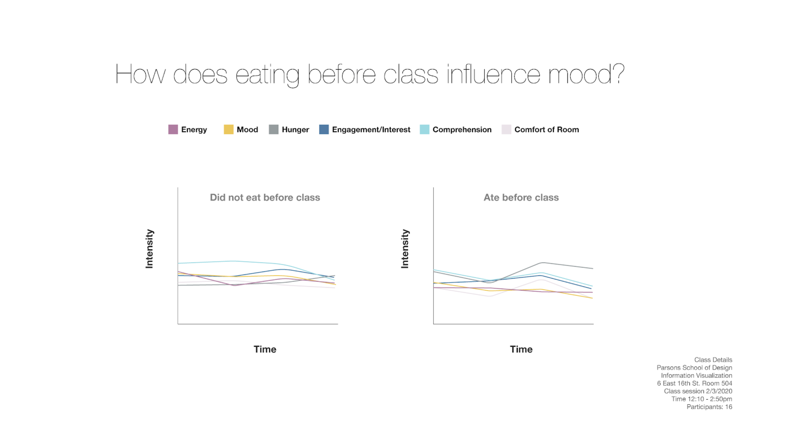

“There is nothing impossible to him who will try.”
Death of the Divine
In 324 B.C, Alexander’s closest life-long friend and partner Hephaistion died from an illness, which had caused Alexander unimaginable grief. He shaved his head, fasted for several days, and killed hundreds as a sacrificial offering in the memory of Hephaistion. Alexander’s death followed a few months after; it is said that he spent those last months in serious depression, drinking excessively, and acting in an unstable manner. In 323 B.C, at the age of 32, Alexander died in Babylon in circumstances that remain a mystery to this day.
Birth
Alexander the Great is Born to King Philip II of Macedonia Queen Olympias of Epirus.
Long Live The King
At the age of 20 Alexander became the King of Macedonia after his father’s assassination.
The Persian Quest Begins
Battle of the Granicus takes place. It is the first major battle against the Persian Empire.
The Gordian Knot & The Battle of Issus
The famous legend of The Gordian Knot took place.
(The Gordian Knot is a legend about how Alexander the Great outwitted an ancient puzzle. The prophecy of the Gordian Knot stated that whoever untied the knot would become the king of all Asia, but the knot was seemingly impossible to untie. When Alexander came across it he decided to do so by simply cutting through it with his sword. Considering that Alexander did eventually become the King of all Asia, one could say that the prophecy came true.)
The Battle of Issus took place. Alexander faced Darius III (the King of the Persian Empire) for the first time. Darius fled the battle.
Son of Ammon-Zeus
Alexander became the Pharaoh of Egypt after liberating them from the Persians. Was proclaimed as the ‘Son of Ammon-Zeus’ by the Oracle of Siwah.
Persia's Defeat
The Battle at Gaugamela was the third and final battle between Alexander and Darius. Though vastly outnumbered, Alexander won, soon after which he became the new King of Persia, and Darius fled once again from the battle (but was later killed by his own men).
The Bactrian Marriage
Battle after battle, Alexander's empire stretched further east across Asia. He succeeded in capturing the Sogdian Rock, after which he built allyship with the Sogdians and Bactrians by marrying Roxana, his first wife.
The Empire's Limit
After finally reaching India the Battle of Hydaspes against King Porus took place. Alexander’s army won but suffered many casualties and Alexander’s horse Buchephalus died. It was the last major battle for his army.
The Desert March
After several revolts, Alexander had agreed to turn his army back and return to Persia (while also agreeing to let many Macedonian veterans return home). Their returning route from Asia passed through the Gedrosian Desert, in which they lost track for many days and many of his people died.
The Final Return
Alexander’s army finally returned to Persepolis after many years of battles. They then made their way to Susa at which many celebrations including a mass-marriage of Macedonians and Persians took place. After Susa Alexander moved to Ektabana where his life-long partner and friend Hephaestion died.
Death
For several months that followed Alexander suffered from deep depression. One day he caught a fever after a celebration which developed into a severe illness. A few days later Alexander the Great died.
Greatness is Immortal
As Alexander spread his army across various ancient civilizations such as Egypt, Persia, Greece, India and others, he left a great legacy behind, parts of which still exist in the modern days. He had a strong influence on the places which he conquered, impacting the culture and education. Under his army, religions and traditions were exchanged. After his death, various myths and legends were born, based on him, and even in some civilizations, he was seen as a deity. What many see as the most important aspect of the legacy is Alexander the Great himself. Even to this day, he continues to fascinate people, making him one of the most studied figures in human history. The way people still see him as an exceptional leader even after 2300 years since his existence proves how truly great he was.
